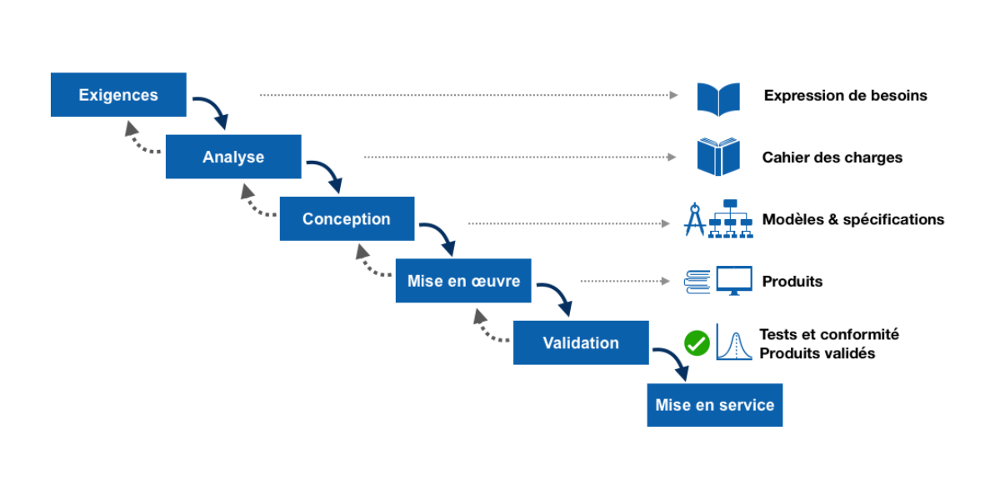

🔍 Description du modèle
Le modèle en cascade est une méthode séquentielle où chaque phase doit être complètement terminée avant de passer à la suivante. C’est le plus ancien modèle de cycle de vie logiciel, caractérisé par sa simplicité et sa linéarité.
🖼️ Schéma illustratif
⚙️ Les phases du modèle
- Analyse des besoins (Recueil des exigences)
- Conception du système
- Implémentation (Codage)
- Tests et validation
- Déploiement (Livraison)
- Maintenance
✅ Avantages
- Simplicité de gestion et de contrôle
- Documentation claire et complète
- Approprié pour des projets avec des exigences très claires et stables
❌ Inconvénients
- Difficile de revenir en arrière une fois qu'une étape est terminée
- Peu flexible face aux changements tardifs
- Livraison tardive du produit final (tests à la fin)
📋 Cas d’utilisation typiques
- Projets aux exigences clairement définies dès le début (ex. systèmes embarqués, systèmes critiques)
- Projets simples, à petite échelle, avec une portée bien maîtrisée
🧪 Rôle des tests dans ce modèle
Les tests interviennent principalement après l’étape de codage. Cela implique un risque élevé : la détection tardive d’erreurs peut entraîner des coûts élevés de correction.
- Tests unitaires
- Tests d'intégration
- Tests système
- Tests d'acceptation